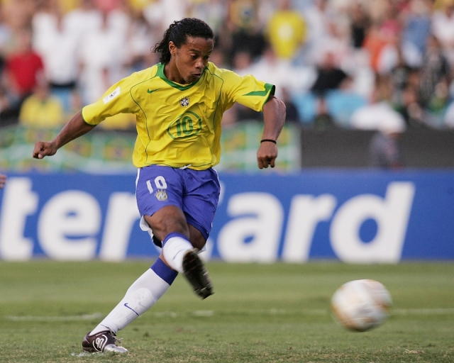
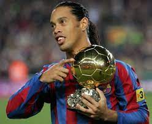

Ronaldinho Gaucho o bruxo

o mago do drible

CARREIRA RONALDINHO GAUCHO
Ronaldo de Assis Moreira, mais conhecido como Ronaldinho Gaúcho ou simplesmente Ronaldinho (Porto Alegre, 21 de março de 1980), é um ex-futebolista brasileiro que atuava como meia-atacante. Atualmente é embaixador do Barcelona, clube em que fez história.
Uma de suas marcas registradas é o aspecto dentuço, seus dribles fantásticos e usar uma faixa na cabeça após adotar os cabelos longos. Extremamente habilidoso e muito preciso em seus chutes e passes, é considerado por muitos especialistas como o futebolista mais talentoso de sua geração. Popularizou a cobrança de falta por debaixo da barreira.
Venceu o prêmio Melhor Jogador do Mundo pela FIFA em 2004 e 2005, época em que viveu o grande auge de sua carreira. Foi o primeiro (e ainda é o único) futebolista na história a ter conquistado Liga dos Campeões da UEFA, a Libertadores, a Copa do Mundo e a também ter sido eleito o Melhor do Mundo. Empatado com Cuauhtémoc Blanco, é o maior goleador da Copa das Confederações, com 9 gols
Ganhou, em 2013, o prêmio de Rei da América, em eleição anual do diário El País, do Uruguai, desbancando Neymar e Maxi Rodríguez.